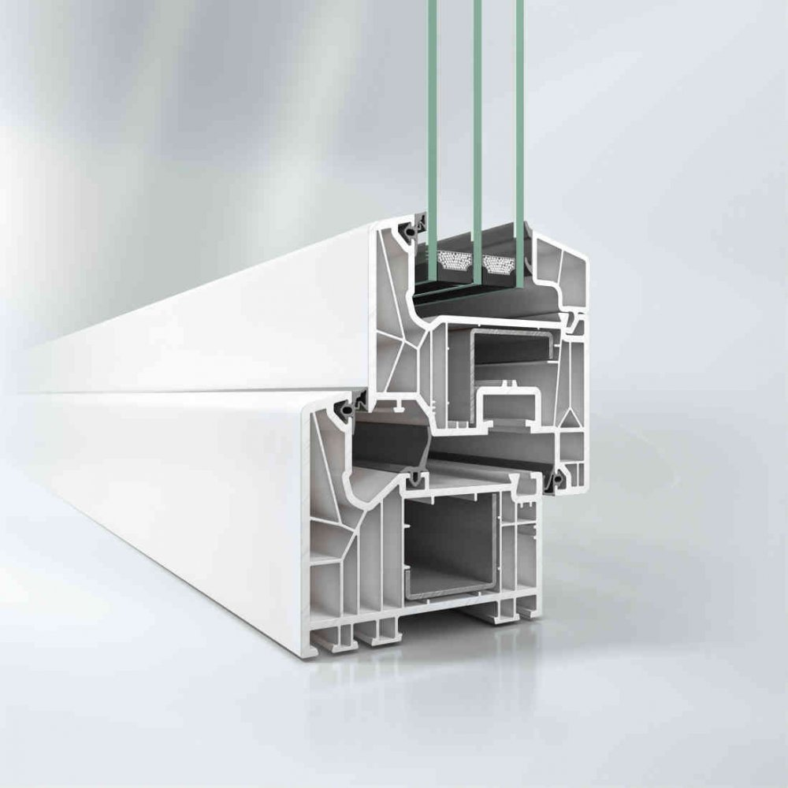

Serie practicable de 82 mm
Características:
Con un perfil de 82 mm de profundidad es la ventana de ahorro energético para las más altas exigencias.
Seis cámaras de aire independientes dentro de la sección del perfil alcanzan una eficiencia energética hasta ahora impensable, permitien do ahorrar hasta el 29% de su consumo energético.
Profundidad de marco: 82 mm.
Aislamiento térmico Uf: 1,0 / 1,1 W(m2.k).
Aislamiento acústico: hasta 47 dB.
Permeabilidad al aire: CLASE 4.
Estanqueidad al agua: CLASE 9A.
Resistencia a la carga del viento: CLASE C5.
Ficha técnica